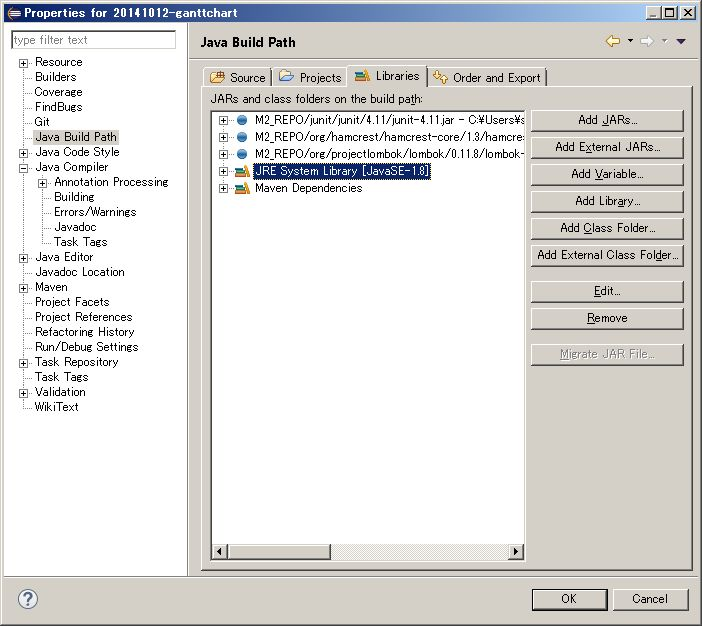
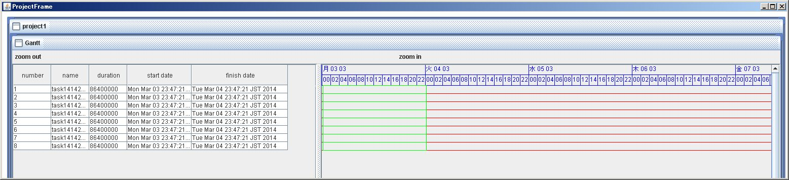
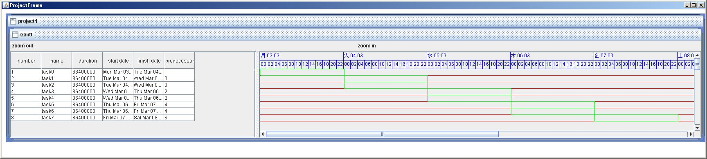
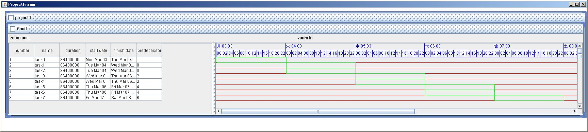
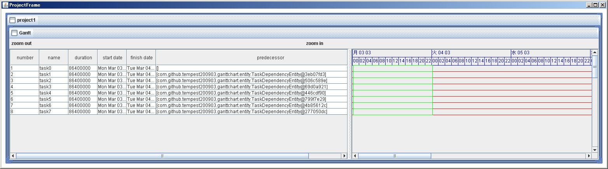
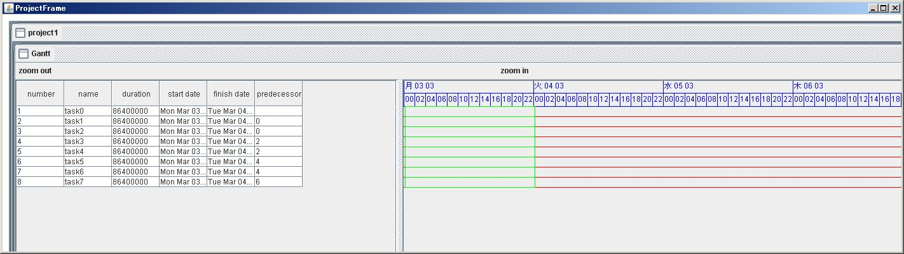

note-d20141012
Table of Contents
- 1 20141012-ガントチャート
- 1.1 目標
- 1.2 project
- 1.3 Lombok
- 1.4 UML Designer (Eclipse Luna version) 4.0
- 1.5 PlantUML
- 1.6 maven
- 1.7 class DateLinePainter
- 1.8 timelog
- 1.9 TimelineChart を縦横スクロール可能にする
- 1.10 TimelineChart の行のY座標とテーブルの行のY座標を合致させる
- 1.11 〔table に task duration, start date, finish date を表示する〕
- 1.12 〔TimelineChart に task bar を描画する〕
- 1.13 〔TaskEntity Duration, Start, Finish 計算アルゴリズム〕
- 1.14 〔TaskEntity predecessors をテーブルに表示する〕
- 1.15 〔TaskEntity startDate, finishDate を変更して保存／復元する〕
- 1.16 splitPane の垂直スクロールを同期させる
- 1.17 Lombok toString() の問題点
- 1.18 ProjectEntity をファイルに出力する
- 1.19 memo
1 20141012-ガントチャート
1.1 目標
- OpenProj / ProjectLibre より自分が使いやすいガントチャートアプリケーションを作る。
1.2 project
- cd 'F:\goat-pc-data\ecworkspace'
- mvn archetype:generate -DarchetypeArtifactId=maven-archetype-quickstart -DgroupId=com.github.tempest200903 -DartifactId=20141012-ganttchart -DinteractiveMode=false
- cd 20141012-ganttchart
- mvn eclipse:eclipse
- git clone git@github.com:tempest200903/20141012-ganttchart.git
1.3 Lombok
- http://ameblo.jp/principia-ca/entry-11562887744.html
- lombokで快適Java生活｜サイバーエージェント 公式エンジニアブログ
- インストーラ実行。 eclipse.ini にVM引数を追加。
- pom.xml に dependency 追加。
<dependency> <groupId>org.projectlombok</groupId> <artifactId>lombok</artifactId> <version>0.11.8</version> </dependency>
1.4 UML Designer (Eclipse Luna version) 4.0
- Eclipse Market にて "UML Designer (Eclipse Luna version) 4.0" をインストール。
- http://marketplace.eclipse.org/content/uml-designer-eclipse-luna-version?mpc=true&mpc_state=#
- 使用中止
1.5 PlantUML
- http://www.smartics.de/archives/1313
- Using PlantUML
1.6 maven
-
- compiler verion 1.8 を指定すると、 mvn compile が失敗してしまう。原因不明。 version 1.7 なら失敗しない。
- C:\tool\Maven\apache-maven-3.1.1\bin\mvn
- export JAVAHOME="C:/Program Files/Java/jdk1.8.020"
- set JAVAHOME=C:\Program Files\Java\jdk1.8.020
- F:\goat-pc-data\ecworkspace\20141012-ganttchart\pom.xml
- 解決できない。しばらく compiler verion 1.7 を使う。
-
- compiler verion 1.8 で mvn compile と Eclipse build ともに成功した。
- 
1.7 class DateLinePainter
- type 1
- 1: 水 8 10, 木 9 10
- 2: 0,2,4,6,8,10,12,14,16,18,20,22 (+2h)
- type 2
- 1: 水 8 10, 木 9 10
- 2: 0,6,12,18 (+6h)
- type 3
- 1: 12 10 14, 19 10 14
- 2: 日月火水木金土 (曜日)
- type 4
- 1: 10 2014, 11 2014
- 2: 7,10,13,16,19,21,24,27,30 (+3d)
- type 5
- 1: 10 2014, 11 2014
- 2: 05,12,19,26 (+7d)
1.8 DONE timelog
1.9 DONE TimelineChart を縦横スクロール可能にする
1.10 DONE TimelineChart の行のY座標とテーブルの行のY座標を合致させる
- 案1.
- テーブルの行のY座標を TimelineChart に渡す。
- どうやってテーブルの行のY座標を得る？
- 完了。
1.11 DONE 〔table に task duration, start date, finish date を表示する〕
1.12 DONE 〔TimelineChart に task bar を描画する〕
- 未完成。
- 
1.13 TODO 〔TaskEntity Duration, Start, Finish 計算アルゴリズム〕
- 現状の問題点
- Start, Finish を先に決めて Duration をあとから Finish - Start で算出するのではだめ。
- なぜなら、 non-working time も Duration に含んでしまうから。
- Start, Finish を先に決めて Duration をあとから Finish - Start で算出するのではだめ。
- 改善案1
- Duration を決める。
- TaskConstraintType に応じて、 Start か Finish どちらかを決める。前提: FS リンク。
ASSOONASPOSSIBLE predecessors.finish を this.start に反映する ASLATEASPOSSIBLE successors.start を this.finish に反映する MUSTSTARTON 指定日時を this.start に反映する MUSTFINISHON 指定日時を this.finish に反映する STARTNOEARLIERTHAN max( 指定日時, predecessors.finish ) を this.start に反映する STARTNOLATERTHAN min( 指定日時, predecessors.finish ) を this.start に反映する FINISHNOEARLIERTHAN max( 指定日時, successors.finish ) を this.finish に反映する FINISHNOLATERTHAN min( 指定日時, successors.finish ) を this.finish に反映する
- F:\goat-pc-data\ecworkspace\20141012-ganttchart\src\main\java\com\github\tempest200903\ganttchart\entity\TaskEntity.java
1.13.1 DONE 〔ASSOONASPOSSIBLE を実装する〕
[X]getStartDate[X]getFinishDate- F:\goat-pc-data\ecworkspace\20141012-ganttchart\src\main\java\com\github\tempest200903\ganttchart\entity\TaskConstraintType.java
- ASSOONASPOSSIBLE 計算式で start date を決定する。
- 
- 成功。
- 
- DONE 〔TaskConstraintTypeAsSoonAsPossible のユニットテスト〕
- TaskConstraintTypeAsSoonAsPossibleTest
- DONE 〔Dateを検証するMatcherを利用する〕
- http://tsukaby.com/tech_blog/archives/297
- assertEqualsするだけがJUnitじゃなかった！機能の紹介
Dateを検証するMatcherを公開している人がいるはずです。 これは実際居て、以下にて公開されています。 https://github.com/modularit/hamcrest-date いやっほう！stewbisありがとう！Maven Centralにも登録されている！さらにBSDライセンスで僕たちは（比較的）自由だ！ 早速上記のサイト通りpom.xmlに依存ライブラリを追加し、hamcrest-dateを利用します。
- assertEqualsするだけがJUnitじゃなかった！機能の紹介
- https://github.com/eXparity/hamcrest-date
- F:\goat-pc-data\ecworkspace\20141012-ganttchart\pom.xml
<dependency> <groupId>org.exparity</groupId> <artifactId>hamcrest-date</artifactId> <version>1.0.1</version> </dependency>
- http://tsukaby.com/tech_blog/archives/297
1.14 DONE 〔TaskEntity predecessors をテーブルに表示する〕
- 
- 未完成。 TaskDependency.toString() ではなく task number を表示するべき。
- 
- task number を表示した。
1.15 TODO 〔TaskEntity startDate, finishDate を変更して保存／復元する〕
1.16 PENDING splitPane の垂直スクロールを同期させる
- splitPane の子要素で垂直スクロールしたら、他の子要素も同じ位置に垂直スクロールする。
1.17 PENDING Lombok toString() の問題点
- @Data class A { B b; } @Data class B { A a; } としたとき、 A.toString() で StackOverflowError が発生する？
- 例
F:\goat-pc-data\ecworkspace\20141026-LombokExperimental\src\main\java\com\example\Main.java
実行すると StackOverflowError 発生。
Exception in thread "main" java.lang.StackOverflowError at java.lang.AbstractStringBuilder.append(AbstractStringBuilder.java:422) at java.lang.StringBuilder.append(StringBuilder.java:136) at java.lang.StringBuilder.<init>(StringBuilder.java:113) at com.example.B.toString(B.java:5) :…
1.18 TODO ProjectEntity をファイルに出力する
- 目的はデバッグと保存復元。
- XMLEncoder を使うと不必要に public や setter を増やしてしまう。
- 他の方法を探す。
- 注意。 OutputStream および XMLEncoder を close しないとファイルは空になる。
1.19 memo
- copy f:/goat-pc-data/cloudsync/OneDrive/tempest200903.github.io/20141012-ganttchart/note-d20141012.org f:/goat-pc-data/mydropbox/Dropbox/trunksync/notes/20141012-ガントチャート.org.txt